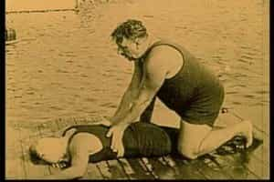
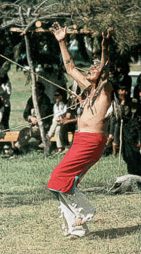

< < < Back
5 Ways To Change Your State Of Consciousness – Return Of Kings
I started running at 4:45 in the afternoon. It was about 120 degrees (49 C) outside. First came exhaustion from the heat. The dust from the desert floor covered me like a heat -amplifying insulator. About 40 minutes in I realized that storm front in the distance was rolling back on me and I wouldn’t be able to get back in time.
That was when the fear set in. When the storm hit me the lightning was so close I could feel the heat coming off the impacts on the ground. And I just knew that if I stopped I would die. By the time I finished I couldn’t remember my name.
Five methods are traditionally used to change a man’s perception of his environment: death, drugs, duress, dreams and meditation. The most important part is to make sure you have a well-thought-out question you need answered, and to hold on to it before you cross the threshold of any of these doorways.
1. Death

Stories of people staring down on their own body on the operating table or looking through the front windshield after a bad car wreck are very common. Hell, I even had a Navy SOCOM operator tell me the story of how he was stunned from a nearby explosion and saw two jihadis running toward him from around a corner, from a perspective of two stories about his body.
While this is a one-way trip for the most part, some ritualized methods exist to explore this that mostly use asphyxiation and resuscitation. The most common method involves drowning someone and reviving them. The Navy SEALS even use a version of this to teach BUDS students to recognize the signs of actually drowning.
Generally, I recommend against this approach.
2. Drugs
Drugs represent a far more common approach to the problem of changing how you look at the world.
Traditional societies used a variety of pharmacology from ayahuasca to peyote and more. Hippies drop acid and hipsters use DMT. As a one-time experience prescribed under the guidance of someone who knows what they are doing, it probably doesn’t do too much damage over the long term.
That said, just as many people have good trips as bad, and I’ve seen a disturbing trend over the years of people who essentially burned out their meditative potential by having used this methodology. From that standpoint it is a lot like running a turbo on an unprepped motor. Yeah, it will get you the extra performance for a little while, but it usually costs you something over the long term.
Keep in mind, I recommend against this methodology for a whole variety of reasons too involved to get into here.
If you go this route, do your research and look at it as a singular experience to get some guidance you are missing. Traditionally speaking, men with balls tend to use the next method. The women folk were more prone to use drugs and the Muses of ancient Greece certainly had their followers, but I digress.
3. Duress

Duress is probably the most commonly used methodology of the bunch, and a staple of rites of passage everywhere.
The Egyptians used to have their acolytes swim across the Nile River, which was filled with crocodiles. Some South American tribes utilized cliff diving and the Northern Plains tribes had their Sun Dance. In more modern times, 11Bs have the Crucible. Personally, I had to run 9 miles (15km) through a lightning storm in the open desert for one system of training I went through.
Typically these events use a combination of exhaustion, fear, and pain to change an individual’s view of the world.
A good way to do this on your own is to walk between 50-100 miles in one day. Make sure you are fit, well-hydrated and have a plan to get help if things go wrong. By the time you get really dehydrated things get surreal to say the least. Walking on a track tends to induce the state faster, but being alone in the wilderness makes the experience deeper.
Just don’t die.
4. Dreams
Dream yoga has a long established history across many cultures, with the Tibetans probably having the most developed system for this. Over the long term these efforts lead to a state closely related to out-of-body projection.
You will need a notebook and pen to start. The first stage is to say before lying down to sleep, “I will remember my dreams.” Then immediately after waking write down what you remember. After the first week you will have a hard time keeping it to one page.
Next, start pre-planning what you want your dreams to be about. After a while, you will essentially “wake up” during your dreams and have the ability to change things at will. It progresses from there. For vets with bad dreams, even if you go no further with this methodology, this is a great course of action.
5. Meditation
Meditation is the most repeatable, and controllable, of the bunch.
Frankly, so many different varieties of this exist that you will need to research what you are most interested in to get a good handle on what you want to do. That said, most of the systems that specialize in changing your frame of reference use one variety of out-of-body projection or another, even if they don’t use this term precisely.
I recommend Transcendental meditation for a short concise practice, or Theravada Buddhism for a more nuanced approach.
Personally, I offer training in this kind of thing from a uniquely Western approach, but it takes a minimum of 3-4 sessions over the course of a year and about 45 min to an hour a day worth of practice.
Figure out the question you need answered in your life, hold on and get ready for an intense ride. The examined life beats the hell out of selling insurance for a living.
Read More: How To Control Your Emotional State


{kind=link}
{kind=link}
{kind=link}
{kind=link}
{kind=link}